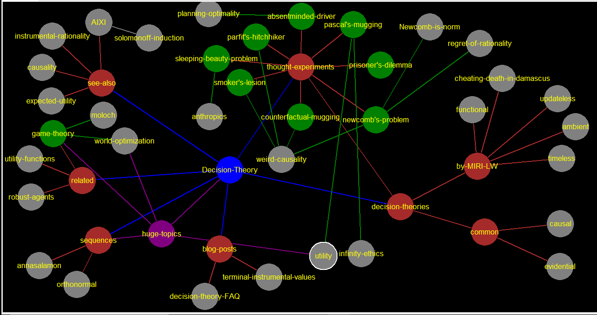

huge-topics
[[world-optimization-->world-optimization]] [[Decision-Theory-->Decision-Theory]] [[game-theory-->game-theory]] [[utility-->utility]] [[sequences-->sequences]]
world-optimization
moloch
solomonoff-induction
dont understand https://www.lesswrong.com/tag/solomonoff-induction formal summary: - Starting with all possible hypotheses (sequences) as represented by computer programs (that generate those sequences), weighted by their simplicity (2-n, where n is the program length) - Discarding those hypotheses that are inconsistent with the data. (correlates to occams razor) https://www.lesswrong.com/tag/occam-s-razor
utility
https://www.lesswrong.com/tag/utilitarianism https://www.lesswrong.com/tag/expected-utility
infinity-ethics
https://www.lesswrong.com/posts/a5JAiTdytou3Jg749/pascal-s-mugging-tiny-probabilities-of-vast-utilities
planning-optimality
anthropics
weird-causality
Newcomb-is-norm
regret-of-rationality
by-MIRI-LW
[[functional-->functional]], [[timeless-->timeless]], [[updateless-->updateless]], [[ambient-->ambient]], [[cheating-death-in-damascus-->cheating-death-in-damascus]]
common
[[causal-->causal]], [[evidential-->evidential]]
cheating-death-in-damascus
didnt read yet https://intelligence.org/2017/03/18/new-paper-cheating-death-in-damascus/
ambient
didnt read yet https://www.lesswrong.com/tag/ambient-decision-theory
updateless
didnt read yet https://www.lesswrong.com/tag/updateless-decision-theory
timeless
dont understand
functional
dont understand "they imagine their algorithm controlling all instances of their decision procedure, including the past copy in the mind of their predictor." agents should treat one’s decision as the output of a fixed mathematical function that answers the question, “Which output of this very function would yield the best outcome?” https://www.lesswrong.com/tag/functional-decision-theory
evidential
dont understand https://www.lesswrong.com/tag/evidential-decision-theory
causal
dont understand https://www.lesswrong.com/tag/causal-decision-theory
decision-theory-FAQ
terminal-instrumental-values
utility-functions
robust-agents
seems tractible. not fully read https://www.lesswrong.com/tag/robust-agents better explanation at: https://www.lesswrong.com/posts/2jfiMgKkh7qw9z8Do/being-a-robust-agent main idea: be robust as opposed to the vague/poorly defined set of motivations and goals and incentives that humans are benefits/components: - deliberate agency - gears-level-understanding of yourself - coherence and consistency - game theoretic soundness
game-theory
easy (to understand the basic definition) broad field formal study of how rational actors behave in situations of conflicting interests [[world-optimization-->world-optimization]] via coordination and cooperation [[moloch-->moloch]] https://www.lesswrong.com/tag/game-theory
annasalamon
outline of seuences: "suppose you're designing joe" 0. Prelude. idk. 1) the goal. to reduce "should" - "should" and "could" are not "physically irreducable existent things" - what kinds of "should" and "could" are useful and how - CSA, why and how likely? 2) non-vicious regress. idk 3/4/5/6) a bunch of things about CSAs. https://www.lesswrong.com/posts/sLxFqs8fdjsPdkpLC/decision-theory-an-outline-of-some-upcoming-posts
orthonormal
pascal's-mugging
[[infinity-ethics-->infinity-ethics]] [[utility-->utility]]
prisoner's-dilemma
sleeping-beauty-problem
she falls asleep. if heads, she wakes up on monday if tails, she wakes up on monday,is asked the question, then gets put to sleep again when she wakes up, is it 50/50 heads/tails, or 33/66? my solution: she doesn't know which situation she is in, and in 2/3 situations it came up tails. so yeah. "one argument says she will see the same thing regardless" but this is irrelevant, because you already know what the odds are, you dont have to look at what you see upon waking up. plus it's already established that you wont receive any information to begin with. arg 2, guessing 33/66 is correct, for the above reason. "the third argument distinguishes between whether she is paid once per experiment, or every time she wakes up" once per experiment: bet on 50% heads once per waking: bet on 33% heads. ^^ this is wrong. it's always most likely to be tails, for the same reason the 2nd "argument" is the only correct one. links to [[anthropics-->anthropics]]
absentminded-driver
me: p_x = p_y = 0.5 ev_exit = 0 + 0.5*4 = 2 ev_cont = 1 (*100%) post: ev = p^2+4(1-p)*p which is maximized by p=2/3 [["planning optimality"-->planning-optimality]] also this just seems irrelevant to alignment
smoker's-lesion
straight from wiki: The Smoking Lesion is a problem for testing decision theories, stated as follows: Smoking is strongly correlated with lung cancer, but in the world of the Smoker's Lesion this correlation is understood to be the result of a common cause: a genetic lesion that tends to cause both smoking and cancer. Once we fix the presence or absence of the lesion, there is no additional correlation between smoking and cancer. Suppose you prefer smoking without cancer to not smoking without cancer, and prefer smoking with cancer to not smoking with cancer. Should you smoke? my response: so you prefer smoking whether smoking and cancer are correlated or not. should you smoke? WELL YEAH. apparently causal decision theory says yes, and evidential says no. oh, the reason for not smoking would be, if you do decide to smoke, then that means you had the lesion to begin with, and you'll get cancer. again the same thing, it feels like your action defines which universes you were in, even before you made that decision. ill put everything in with [[weird-causality-->weird-causality]] (compression achieved. cool.)
parfit's-hitchhiker
hitchiker says, "ill drive you out of the desert but only if you will give me 100 dollars when we get out of the car". unfortunately you "will inevitably lie and lose out of 100 dollars" (because he is a perfect thought-reader) basically the same as Omega. falls under weird causality actually this one is easy. (and maybe this solves all of them) how you should behave in all such situations depends on how many such weird cases occur, and how much money (or utility) you stand to gain/lose on average, and do some kind of expected utility calculation. links to: [[weird-causality-->weird-causality]]
counterfactual-mugging
Omega, a perfect predictor, flips a coin. If it comes up tails Omega asks you for $100. If it comes up heads, Omega pays you $10,000 if it predicts that you would have paid if it had come up tails. if it comes up tails, should you pay? same kind of question as newcomb's problem, it makes you want to decide based on how your current action says something about Omega's prediction, which in turn benefits you in *another situation* ansers: "For Causal Decision Theory, you can only affect those probabilities that you are causally linked to. Hence, the answer should be 'No'. In Evidential Decision Theory any kind of connection is accounted, then the answer should be 'No'" Comparison to Other Problem wtf, man? stop leading me into rabbitholes. links to: fucking everything [[weird-causality-->weird-causality]]
newcomb's-problem
topic: (newcomblike problem) other agents in environment who can predict your actions problem: - super alien predicter Omega offers 2 boxes, one with 1000 dollars, one with either 0 or 1 million. - if it predicted youll take both, there is 0 in box 2, if it predicted youll take only box 2, there is 1 million. - should you take both? different solutions causal says: 2-box evidential says: 1-box functional says: 1-box thoughts: - i dont see how this is relevant, plus i dont understand any of the 3 decison theories - counterargument: https://www.lesswrong.com/tag/newcomb-s-problem Notable posts Newcomb's Problem and Regret of Rationality Formalizing Newcomb's Newcomb's Problem standard positions Newcomb's Problem vs. One-Shot Prisoner's Dilemma Decision theory: Why Pearl helps reduce “could” and “would”, but still leaves us with at least three alternatives links to: [[weird-causality-->weird-causality]] [[Newcomb-is-norm-->Newcomb-is-norm]] [[regret-of-rationality-->regret-of-rationality]]
AIXI
dont understand an application of [[solomonoff-induction-->solomonoff-induction]] - a mathematical formalism for a hypothetical (super-)intelligence - "Decision theory formally solves the problem of rational agents in uncertain worlds if the true environmental prior probability distribution is known. Solomonoff’s theory of universal induction formally solves the problem of sequence prediction for unknown prior distribution. We combine both ideas and get a parameterless theory of universal Artificial Intelligence." what is sequence prediction? aixi is not feasible, because Solomonoff induction is not computable https://www.lesswrong.com/tag/aixi
expected-utility
easy core concept expected utlity is about looking at all possible outcomes, weighting each outcome by how "valuable" it is, and summing the values. this sum is the expected utlity, or value, of the situation you are in. example. a game where a coin is flipped, and if it's heads, you get 5 dollars, and if it's tails, you have to pay 5 dollars. expected utility of the game: 5 * 0.5 - 5 * 0.5 = 0 if it's gain 10 dollars for heads and lose 5 for tails, it is: 10*0.5 - 5*0.5 = 2.5 that means that this game is "worth 2.5 dollars", in a way.
causality
easy Causality is the intuitive notion that some events happening "result" in other events happening https://www.lesswrong.com/tag/causality
instrumental-rationality
the art of choosing and implementing actions that will lead to good things https://wiki.lesswrong.com/index.php?title=Rationality&_ga=2.86040922.376590993.1669510658-733370443.1668110520#Instrumental_rationality
see-also
[[instrumental-rationality-->instrumental-rationality]], [[causality-->causality]], [[expected-utility-->expected-utility]], [[AIXI-->AIXI]]related
[[game-theory-->game-theory]] (188), [[robust-agents-->robust-agents]] (25), [[utility-functions-->utility-functions]] (122)
sequences
by [[annasalamon-->annasalamon]], [[orthonormal-->orthonormal]]
blog-posts
[[terminal-instrumental-values-->terminal-instrumental-values]], [[less-wrong-primer-->less-wrong-primer]] [[decision-theory-FAQ-->decision-theory-FAQ]]
decision-theories
commonly discussed decision theories: - standard, well-known theories: [[common-->common]] - theories invented by MIRI and LW: [[by-MIRI-LW-->by-MIRI-LW]]
thought-experiments
[[newcomb's-problem-->newcomb's-problem]], [[counterfactual-mugging-->counterfactual-mugging]], [[parfit's-hitchhiker-->parfit's-hitchhiker]], [[smoker's-lesion-->smoker's-lesion]], [[absentminded-driver-->absentminded-driver]], [[sleeping-beauty-problem-->sleeping-beauty-problem]], [[prisoner's-dilemma-->prisoner's-dilemma]], [[pascal's-mugging-->pascal's-mugging]], [[decision-theories-->decision-theories]]
Decision-Theory
[[related-->related]]: game theory, robust agents, utility functions [[thought experiments-->thought-experiments]] [[decision theories-->decision-theories]] related [[blog posts-->blog-posts]] related [[sequences-->sequences]] [[see also-->see-also]] https://www.lesswrong.com/tag/decision-theory
css [stylesheet]